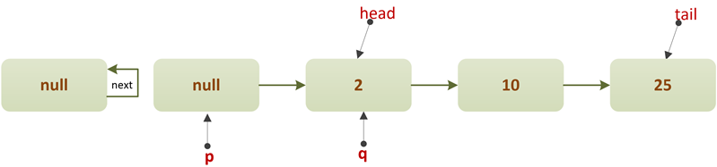

Java多线程进阶（二九）—— J.U.C之collections框架：ConcurrentLinkedQueue
一、ConcurrentLinkedQueue简介
ConcurrentLinkedQueue是JDK1.5时随着J.U.C一起引入的一个支持并发环境的队列。从名字就可以看出来，ConcurrentLinkedQueue底层是基于链表实现的。
Doug Lea在实现ConcurrentLinkedQueue时，并没有利用锁或底层同步原语，而是完全基于自旋+CAS的方式实现了该队列。回想一下AQS，AQS内部的CLH等待队列也是利用了这种方式。
由于是完全基于无锁算法实现的，所以当出现多个线程同时进行修改队列的操作（比如同时入队），很可能出现CAS修改失败的情况，那么失败的线程会进入下一次自旋，再尝试入队操作，直到成功。所以，在并发量适中的情况下，ConcurrentLinkedQueue一般具有较好的性能。
二、ConcurrentLinkedQueue原理
2.1 队列结构
我们来看下ConcurrentLinkedQueue的内部结构，：
public class ConcurrentLinkedQueue<E> extends AbstractQueue<E>
implements Queue<E>, java.io.Serializable {
/**
* 队列头指针
*/
private transient volatile Node<E> head;
/**
* 队列尾指针.
*/
private transient volatile Node<E> tail;
// Unsafe mechanics
private static final sun.misc.Unsafe UNSAFE;
private static final long headOffset;
private static final long tailOffset;
static {
try {
UNSAFE = sun.misc.Unsafe.getUnsafe();
Class<?> k = ConcurrentLinkedQueue.class;
headOffset = UNSAFE.objectFieldOffset (k.getDeclaredField("head"));
tailOffset = UNSAFE.objectFieldOffset (k.getDeclaredField("tail"));
} catch (Exception e) {
throw new Error(e);
}
}
/**
* 队列结点定义
*/
private static class Node<E> {
volatile E item; // 元素值
volatile Node<E> next; // 后驱指针
Node(E item) {
UNSAFE.putObject(this, itemOffset, item);
}
boolean casItem(E cmp, E val) {
return UNSAFE.compareAndSwapObject(this, itemOffset, cmp, val);
}
void lazySetNext(Node<E> val) {
UNSAFE.putOrderedObject(this, nextOffset, val);
}
boolean casNext(Node<E> cmp, Node<E> val) {
return UNSAFE.compareAndSwapObject(this, nextOffset, cmp, val);
}
// Unsafe mechanics
private static final sun.misc.Unsafe UNSAFE;
private static final long itemOffset;
private static final long nextOffset;
static {
try {
UNSAFE = sun.misc.Unsafe.getUnsafe();
Class<?> k = Node.class;
itemOffset = UNSAFE.objectFieldOffset(k.getDeclaredField("item"));
nextOffset = UNSAFE.objectFieldOffset(k.getDeclaredField("next"));
} catch (Exception e) {
throw new Error(e);
}
}
}
//...
}
可以看到，ConcurrentLinkedQueue内部就是一个简单的单链表结构，每入队一个元素就是插入一个Node类型的结点。字段head指向队列头，tail指向队列尾，通过Unsafe来CAS操作字段值以及Node对象的字段值。
2.2 构造器定义
ConcurrentLinkedQueue包含两种构造器：
/**
* 构建一个空队列（head,tail均指向一个占位结点）.
*/
public ConcurrentLinkedQueue() {
head = tail = new Node<E>(null);
}
/**
* 根据已有集合,构造队列
*/
public ConcurrentLinkedQueue(Collection<? extends E> c) {
Node<E> h = null, t = null;
for (E e : c) {
checkNotNull(e);
Node<E> newNode = new Node<E>(e);
if (h == null)
h = t = newNode;
else {
t.lazySetNext(newNode);
t = newNode;
}
}
if (h == null)
h = t = new Node<E>(null);
head = h;
tail = t;
}
我们重点看下空构造器，通过空构造器建立的ConcurrentLinkedQueue对象，其head和tail指针并非指向null，而是指向一个item值为null的Node结点——哨兵结点，如下图：
2.3 入队操作
元素的入队是在队尾插入元素，关于队列的操作，如果读者不熟悉，可以参考《Algorithms 4th》或我的这篇博文：https://www.jianshu.com/p/f9b65dff52ca
ConcurrentLinkedQueue的入队代码很简单，却非常精妙：
/**
* 入队一个元素.
*
* @throws NullPointerException 元素不能为null
*/
public boolean add(E e) {
return offer(e);
}
/**
* 在队尾入队元素e, 直到成功
*/
public boolean offer(E e) {
checkNotNull(e);
final Node<E> newNode = new Node<E>(e);
for (Node<E> t = tail, p = t; ; ) { // 自旋, 直到插入结点成功
Node<E> q = p.next;
if (q == null) { // CASE1: 正常情况下, 新结点直接插入到队尾
if (p.casNext(null, newNode)) {
// CAS竞争插入成功
if (p != t) // CAS竞争失败的线程会在下一次自旋中进入该逻辑
casTail(t, newNode); // 重新设置队尾指针tail
return true;
}
// CAS竞争插入失败,则进入下一次自旋
} else if (p == q) // CASE2: 发生了出队操作
p = (t != (t = tail)) ? t : head;
else
// 将p重新指向队尾结点
p = (p != t && t != (t = tail)) ? t : q;
}
}
我们来分析下上面offer方法的实现。单线程的情况下，元素入队比较好理解，直接线性地在队首插入元素即可。现在我们假设有两个线程ThreadA和ThreadB同时进行入队操作：
①ThreadA先单独入队两个元素9、2
此时队列的结构如下：
②ThreadA入队元素“10”，ThreadB入队元素“25”
此时ThreadA和ThreadB若并发执行，我们看下会发生什么：
1、ThreadA和ThreadB同时进入自旋中的以下代码块：
if (q == null) { // CASE1: 正常情况下, 新结点直接插入到队尾
if (p.casNext(null, newNode)) {
// CAS竞争插入成功
if (p != t) // CAS竞争失败的线程会在下一次自旋中进入该逻辑
casTail(t, newNode); // 重新设置队尾指针tail
return true;
}
// CAS竞争插入失败,则进入下一次自旋
}
2、ThreadA执行cas操作（p.casNext）成功，插入新结点“10”
ThreadA执行完成后，直接返回true，队列结构如下：
3、ThreadB执行cas操作（p.casNext）失败
由于CAS操作同时修改队尾元素，导致ThreadB操作失败，则ThreadB进入下一次自旋；
在下一次自旋中，进入以下代码块：
else
// 将p重新指向队尾结点
p = (p != t && t != (t = tail)) ? t : q;
上述分支的作用就是让p指针重新定位到队尾结点，此时队列结构如下：
然后ThreadB会继续下一次自旋，并再次进入以下代码块：
if (q == null) { // CASE1: 正常情况下, 新结点直接插入到队尾
if (p.casNext(null, newNode)) {
// CAS竞争插入成功
if (p != t) // CAS竞争失败的线程会在下一次自旋中进入该逻辑
casTail(t, newNode); // 重新设置队尾指针tail
return true;
}
// CAS竞争插入失败,则进入下一次自旋
}
此时，CAS操作成功，队列结构如下：
由于此时p!=t ，所以会调用casTail方法重新设置队尾指针：
casTail(t, newNode); // 重新设置队尾指针tail
最终队列如下：
从上面的分析过程可以看到，由于入队元素一定是要链接到队尾的，但并发情况下队尾结点可能随时变化，所以就需要指针定位最新的队尾结点，并在入队时判断队尾结点是否改变了，如果改变了，就需要重新设置定位指针，然后在下一次自旋中继续尝试入队操作。
上面整个执行步骤有一段分支还没有覆盖到：
else if (p == q) // CASE2: 发生了出队操作
p = (t != (t = tail)) ? t : head;
这个分支只有在元素入队的同时，针对该元素也发生了“出队”操作才会执行，我们后面会分析元素的“出队”，理解了“出队”操作再回头来看这个分支就容易理解很多了。
2.4 出队操作
队列中元素的“出队”是从队首移除元素，我们来看下ConcurrentLinkedQueue是如何实现出队的：
/**
* 在队首出队元素, 直到成功
*/
public E poll() {
restartFromHead:
for (; ; ) {
for (Node<E> h = head, p = h, q; ; ) {
E item = p.item;
if (item != null && p.casItem(item, null)) { // CASE2: 队首是非哨兵结点(item!=null)
if (p != h) // hop two nodes at a time
updateHead(h, ((q = p.next) != null) ? q : p);
return item;
} else if ((q = p.next) == null) { // CASE1: 队首是一个哨兵结点(item==null)
updateHead(h, p);
return null;
} else if (p == q)
continue restartFromHead;
else
p = q;
}
}
}
还是通过示例来看，假设初始的队列结构如下：

①ThreadA先单独进行出队操作
由于head所指的是item==null的结点，所以ThreadA会执行以下分支：
else
p = q;
然后进入下一次自旋，在自旋中执行以下分支，如果CAS操作成功，则移除首个有效元素，并重新设置头指针：
if (item != null && p.casItem(item, null)) { // CASE2: 队首是非哨兵结点(item!=null)
if (p != h) // hop two nodes at a time
updateHead(h, ((q = p.next) != null) ? q : p);
return item;
}
此时队列的结构如下：

如果ThreadA的CAS操作失败呢？
CAS操作失败则会进入以下分支，并重新开始自旋：
else if (p == q)
continue restartFromHead;
最终前面两个null结点会被GC回收，队列结构如下：
②ThreadA继续进行出队操作
ThreadA继续执行“出队”操作，还是执行以下分支：
if (item != null && p.casItem(item, null)) { // CASE2: 队首是非哨兵结点(item!=null)
if (p != h) // hop two nodes at a time
updateHead(h, ((q = p.next) != null) ? q : p);
return item;
}
但是此时p==h，所以仅将头结点置null，这其实是一种“懒删除”的策略。
出队元素“2”：
出队元素“10”：
最终队列结果如下：
③ThreadA进行出队，其它线程进行入队
这是最特殊的一种情况，当队列中只剩下一个元素时，如果同时发生出队和入队操作，会导致队列出现下面这种结构：（假设ThreadA进行出队元素“25”，ThreadB进行入队元素“11”）
此时tail.next=tail自身，所以ThreadB在执行入队时，会进入到offer方法的以下分支：
else if (p == q) // CASE2: 发生了出队操作
p = (t != (t = tail)) ? t : head;
三、总结
ConcurrentLinkedQueue使用了自旋+CAS的非阻塞算法来保证线程并发访问时的数据一致性。由于队列本身是一种链表结构，所以虽然算法看起来很简单，但其实需要考虑各种并发的情况，实现复杂度较高，并且ConcurrentLinkedQueue不具备实时的数据一致性，实际运用中，队列一般在生产者-消费者的场景下使用得较多，所以ConcurrentLinkedQueue的使用场景并不如阻塞队列那么多。
另外，关于ConcurrentLinkedQueue还有以下需要注意的几点：
- ConcurrentLinkedQueue的迭代器是弱一致性的，这在并发容器中是比较普遍的现象，主要是指在一个线程在遍历队列结点而另一个线程尝试对某个队列结点进行修改的话不会抛出
ConcurrentModificationException，这也就造成在遍历某个尚未被修改的结点时，在next方法返回时可以看到该结点的修改，但在遍历后再对该结点修改时就看不到这种变化。 size方法需要遍历链表，所以在并发情况下，其结果不一定是准确的，只能供参考。